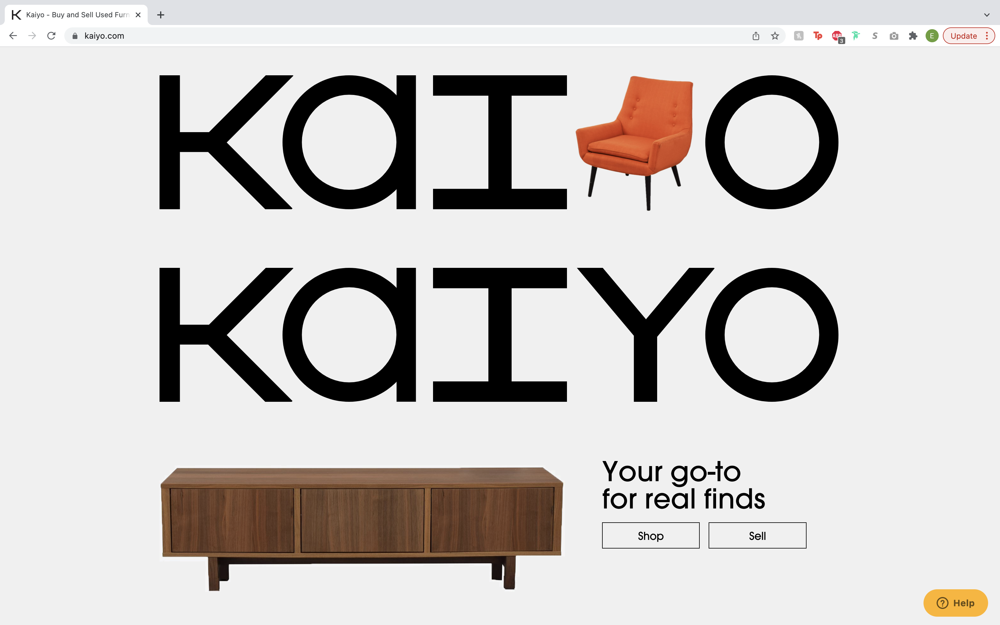
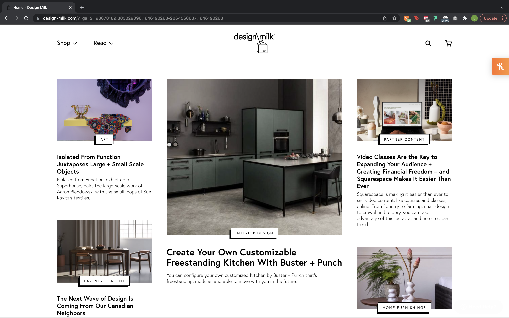
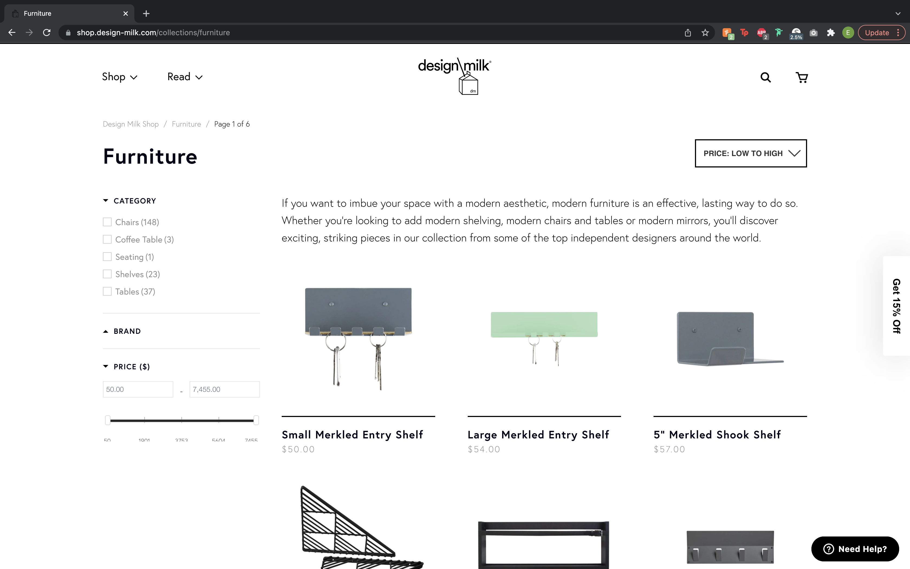

Final project proposal
Introduction
With Love
Welcome to With Love, a furniture upcycling shop based out of San Luis Obispo.
Target audience
With Love is for the sustainably-minded folk with a knack for creativity and making a space their own. Environmentalists, Designers, and crafty people alike will all find comfort in our store. We have hand-picked and in-house-fixed furniture that is one of a kind. Consumers will come to find unique pieces at a great price while being encouraged to shop second-hand. This careful crafting taps into our customers' shopping experience and echos the company's pledge to be eco-conscious and green business certified. Our customers align with these values and are equally driven by price and sustainability.
Our audience wishes to buy furniture with the planet in mind. They crave unique pieces but do not wish to pay for over-priced new furniture. Through With Love they can meet their goals of furnishing their spaces uniquely and at a fair price point while also saving the planet one reuse at a time.
Comparative analysis
Kaiyo

One Kings Lane


Dsign Milk
 Website content
Home
Welcome to With Love!
A shop that sells refurbished and upcyled furntiure in the heart of downtown San Luis Obispo.
[A window display of a staged room using With Love's furniture.]
About
At With Love our team finds vintage and used furniture and turns them into pieces to accommodate modern lifestyles. As a group of sustainably-minded creatives, we work to keep furniture out of landfills and instead give them a second life. With Love was founded by Cal Poly alumnae Elianna Oliver in 2022. The store was originally a family passion project but has shifted to a community-based space to explore and find employment at the intersection of design and sustainability. We are more than excited to have you help us on our journey to more eco-friendly and fabulous spaces. As always, our furniture is made with love.
[The team at With Love in the storefront.]
Gallery
Sofas & Sectionals
With our larger seating options we bring color and patterns into traditional sofas, sectionals, loveseats, and lounge designs. We house a variety of pieces that serve different functions: entertaining a crowd, comforting a family, providing a routine cozy spot for two, or acting as a prop for staging/decor purposes.
[A With Love Staged living room with a vibrant colored, comfy couch.]
Tables & Desks
In a society evolving into different definitions of a workplace environment and a large shift to at-home offices, we tailor our desk and table options to meet these needs. With Love sources designs to elevate the workspace and inspire productivity. Our tables are chosen for their versatility, dual-functionality, and harmonious design.
[A With Love staged dining room table that also functions as a desk.]
Chairs
A chair can mean different things to different people. Whether that is a comfortable place to rest, support for a long day of work, or a welcoming place to host a guest, we house a wide variety. With Love sources multiple style chairs to surround spaces like your dining room table, office desk, or living room corner. We bring fun colors and intricate fabrics into our designs to add a pop of fun to your living space.
[A collage of different chair varieties.]
Dressers & Storage
While storage is not always the most fun concept, it is vital for staying organized. We like to keep our dressers and storage units minimal with detailed and intricate hardware. Our sourcing scouts spend extra time locating vintage and used doorknobs and handles to add an aura of uniqueness to our pieces. With Love houses a variety of aesthetics in our designs to meet customer needs. From rustic painted dressers to clean metal drawers with eclectic handles, you are sure to find a storage piece to stand out or blend in with your interiors.
[A simple wood cabinet with eclectic knob handles.]
Home Decor
While our main focus is furniture, With Love recognizes consumers' desires to make spaces their own through various decor items. Our storefront houses fluctuating ornamentation pieces such as lamps, thrifted art pieces, centerpiece items, pots, among other wonderful nick-nacks. In addition to our beautiful and unique furniture, we encourage customers to pick complementary pieces to enhance their living environment.
[A With Love staged bedroom with fun lamps, art pieces, and bedside coasters.]
Contact
Talk to us!
We love to hear from our customers what they hope to see in our store next. Feel free to reach out with suggestions or any questions you have. Thank you for supporting With Love!
[The outside of the With Love Building from the street.]
[Geographical Map of where With Love is located.]